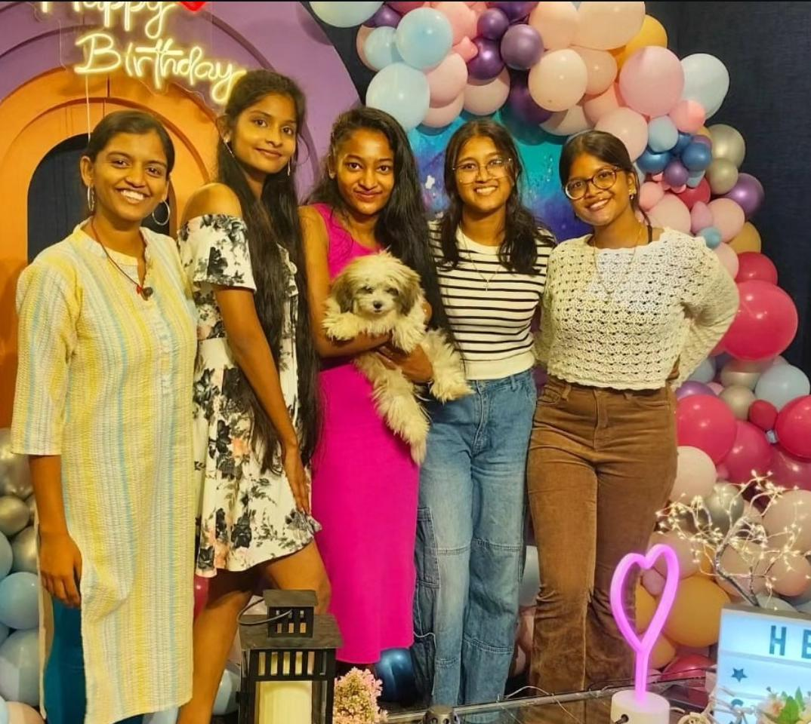
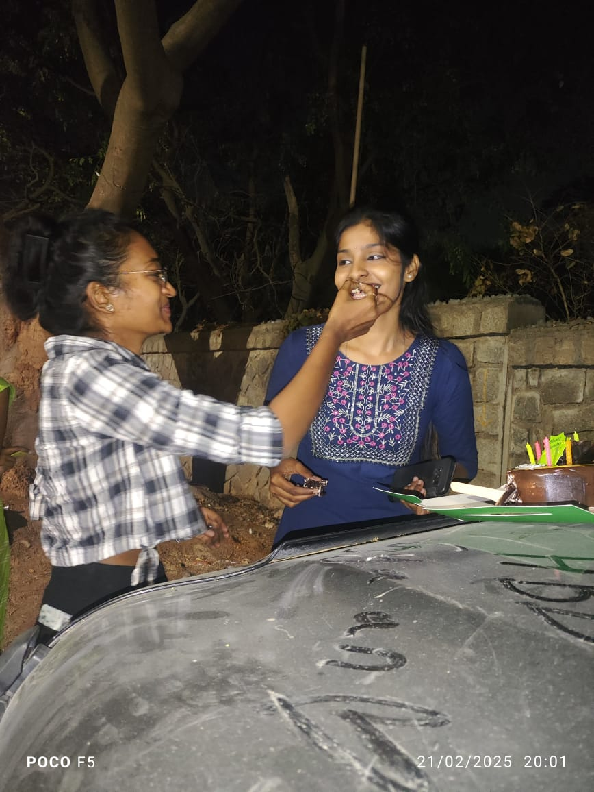
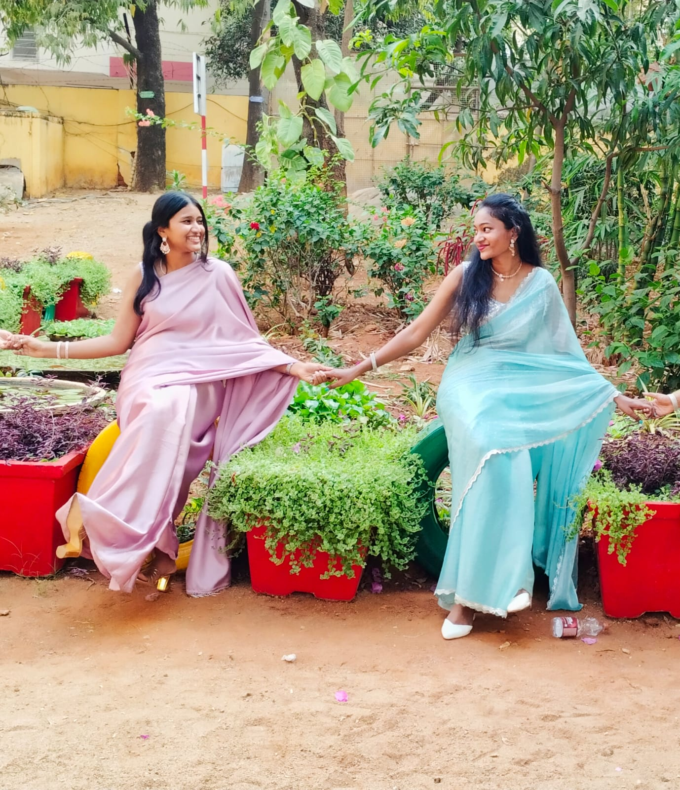
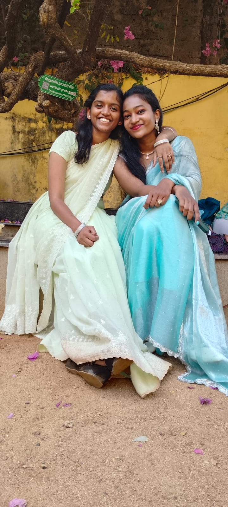

A Special Message For You
Hey Bestieee,
Wishing you the happiest birthday! 🎂❤️. I don't know if I've told you this before, but I'm very, very grateful to have a best friend like you 🫶. Honestly, it's something worth saying over and over again. You've always stood by me through both the good times and the bad 💕. You're a friend who truly understands me in a way that very few people do, sometimes even more than my own family 🥹, and that's something I'll always be grateful for.
You remember the smallest things about me, from listening to all my endless sob stories 😭, to sending me bandages when I tripped and hurt myself 🩹, or ordering food for me just because I decided not to eat all day after an argument at home ❤️. You have always been my partner in crime, and whenever I had problems,whether at home, with friends, in college, or even with boys 🤦♀️,you were always there with advice and solutions 💡 (even though I still manage to overthink everything after you've already solved the problem 😭😂).
Thank you for always covering for me 🫂, spoiling me with yummy food 🍫 and thoughtful gifts 🎁, and paying attention to even the tiniest details about the things I love. It's the little things you do that mean the most 💖.For me, you're more than just a best friend. You're my comfort , my safe place 🏡, my biggest support system 💪, and one of the people I cherish the most ❤️. I genuinely don't know what I would do without you.
I truly believe that even if the whole world ever gives up on me or turns its back on me, you never will and I promise I’ll always be there for you the same way.
Love you so much, Shineeeee ❤️🫶
Gyan💜
Your Story Arc

Our Best Memory Together
I think this is one of our best memories, or at least one of my favourites. Remember the kind of stunts we had to pull just to make this plan work? 😭 This was the first birthday celebration of yours that I got to be a part of, and the first time all of us came together to celebrate you.I still remember how shocked you were when you saw me there (even though you kind of had a feeling I might show up 😌). But hey, I still count that as a successful surprise. 😂What makes this memory so special to me is the look on your face when we introduced you to Maggie 🐶. The happiness, excitement, and pure joy you had in that moment made every bit of planning and every struggle worth it. From secretly coordinating everything to convincing the restaurant to let Maggie in, nothing about that day was easy, but seeing your reaction made it all worthwhile.That day reminded me how little things can mean so much, especially when they're shared with people you care about. More than anything, I just want to see you that happy every single day, because you deserve nothing less. ❤️

Unforgettable Moment
This has to be one of the best days of my life. ❤️ Even today, I still find myself reliving this memory and smiling. It was my 21st birthday, and despite knowing how busy both you and Jyots were, you still took the time to come all the way to my college just to surprise me 🥹. What makes it even more special is that you had to wait for my practice to get over and then patiently sit through my birthday celebration with my college friends. Looking back, I don't know how you both managed it without getting frustrated. 😭. And as if that wasn't enough, you had already decorated your house for me, packed gifts, and made sure every single thing was something I loved 🎁❤️. The fact that you both put in so much effort, despite your busy schedules, meant more to me than I can ever put into words.A special mention also goes to my 22nd birthday 🫶. In the middle of your MBA 1st sem finals and all the academic chaos, you somehow found the time to make me a handcrafted album and surprise me . Not only that, but you also made sure I got to do all the things I wanted for my birthday. The amount of thought, effort, and love you put into that day still amazes me. And that album? ❤️ It will forever be one of the most precious gifts I've ever received and something I'll cherish for the rest of my life.I also have to mention the day you came to my college during our second year just to surprise me. 😭❤️ I don't think I've ever hidden my excitement so badly because I was genuinely SO happy to see you.Thank you for always making my birthdays feel special, loved, and unforgettable. It's the effort and thought behind them that I'll always treasure the most.

To My Childhood Buddy
I don’t even know where to start because there are so many memories and feelings I want to put into words. From LKG till now, you have been one of the most special people in my life. It’s amazing how a friendship that started when we were so little became such an important part of my journey. You were the person who pushed me to be brave and try things I never thought I could do. I still remember that day when you taught me how to get on the metro. It may seem like a small thing, but for me, it was a big moment. You came with me till the end of the metro station and made sure I was okay. That day showed me how much you cared and how you always stood by me. You have always supported me in the smallest but sweetest ways. Like how you used to buy me a Thumbs Up whenever I went and ordered something by myself those little moments meant so much to me. You always made me feel confident and encouraged me to do things on my own. College became such a beautiful journey because of you (and jo😜). The laughs, the memories, and all the little moments we shared are things I will always carry with me. Our Bangalore trip was one of the most memorable moments of our college life. It was our first trip together, and even though we missed jo(that idiot), I never regretted a single second of that trip. You took care of me throughout the trip, and that made me realize again how lucky I am to have you. And I can never forget how you were there for me during exams. Every time I got scared, I used to text you saying, “ I am so scared, I am so scared.” I would message you almost every day during exam time, and you always knew how to calm me down. You would just tell me, “Take it lightly,” and somehow those simple words made me feel better. You always helped me handle my stress and made things feel easier. You were not just my friend; you were my backbone. You made scary things feel easy, ordinary days feel special, and college life so much more fun. Thank you for always being there, for believing in me, and for making so many beautiful memories with me.I’m truly grateful that life gave me a friend like you. No matter how much time passes, these memories and our bond will always be special to me.With lots of love, Christ.

To My Lovely Sis
To the Shine in My Life 💜,To one of my favourite companions through college and beyond, and hopefully for a lifetime. Honestly, you're just such a feel-good person to be around. I genuinely wish everyone had someone like you in their life because then they'd know what it feels like to have such a wholesome and beautiful bond.Wishing you the most magical moments, endless happiness, and all the wonderful things life has to offer, dear Shine Star 🌟. Your happiness and a beautiful life have genuinely been a part of my prayers and wishes for as long as I can remember.Love you, Sis! 💜🫶 Just stay exactly the way you are because you are truly one in a trillion. And that's not just something I'm saying for the sake of it—I genuinely got lucky to have you in my life, girl!! 🥹.With lots of love, Jyots❤️
Beautiful You
Forever Us
Happyy Daysss
{kind=link}
{kind=link}
{kind=link}
{kind=link}
{kind=link}
{kind=link}
{kind=link}
{kind=link}
{kind=link}
{kind=link}
{kind=link}
{kind=link}